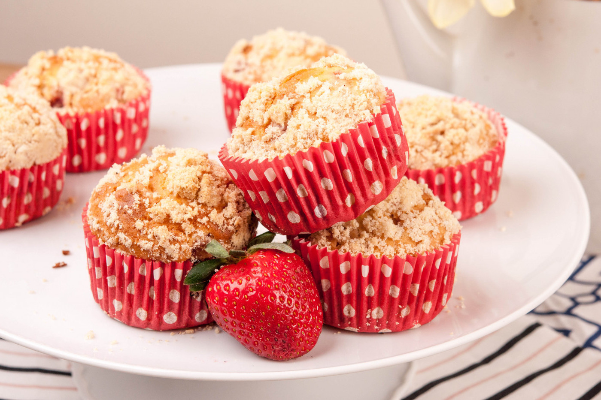

Мъфините с ягоди намират своето уютно място в дългия списък с рецепти за мъфини. Ягодите са любим плод и през последните години присъстват на пазара през по-голямата част от годината, което ги прави почти целогодишен плод. Изключително лесни за приготвяне и много атрактивни като външен вид, мъфините с ягоди и маслени трохи са не само много вкусни, а и чудесна идея за всеки делник и празник.
📖
Трудна
⏱️
40 мин.
🍴
12